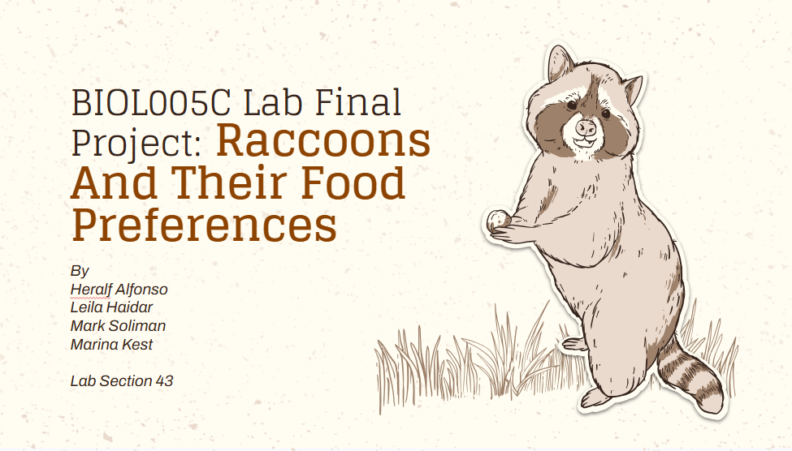
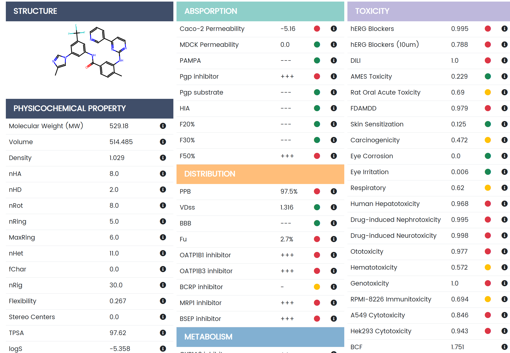
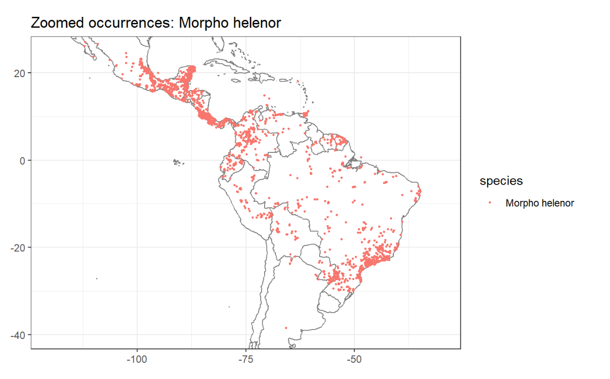

Hello, welcome to my Biology tab, where I am archiving my biology projects. From ecology to bioinformatics and such, this page shows some projects I've had. Feel feel to scroll through for some inspiration.
Raccoon Diets

This is one of my projects for a class. In an ecology class, I ran a long-term study on raccoon eating habits. A group of peers and I made boxes that contained food and utilized carbon paper to track how much animal activity went on. Through this, we collected the data to the left and found out which food items raccoons prefered (sweets).
Drug Development

In a bioinformatics class, we had several projects. From protein docking to drug-making. On the left is a drug I made with the help of SwissProt and validated its effects using ADMET. The original framework utilized two artificially synthesized drugs and their effects. By combining the two and utilizing an benzene ring, I was able to make and test the drug on the left. Included on the image is a toxicology report, indicating its utilizition as an optical disinfectant.
Morpho Mapping

In a computational biology class, one of the projects involved us mapping out the habitat and user submitted sightings of species utilizing the get.gbif() function. In this project, I chose the morpho butterfly genus, specifically the Morpho Helenor. In this project, GBIF or the Global Biodiversity Information Facility, a live ecological and evolutionary repository was utilized to make this map along with RStudio, an Integrated Development Environment for R.